Una sola respuesta válida
El objetivo principal de STACK no es usar preguntas de opción múltiple, sino que el estudiante ingrese una expresión algebraica. Dicho esto, hay ocasiones en las que resulta muy útil, e incluso necesario, usar preguntas de opción múltiple en sus diversas formas. El uso de un sistema de álgebra computacional (CAS) en STACK es muy beneficioso para generar variantes aleatorias de preguntas de opción múltiple basadas en valores matemáticos.
Los tipos de entrada de opción múltiple devuelven un objeto CAS que luego es evaluado por el árbol de respuestas potenciales. Por esta razón, estas entradas no proporcionan campos de retroalimentación para cada posible respuesta, como lo hace el tipo de entrada de opción múltiple en Moodle:
- Entradas con botones de opción (radio) y listas desplegables: devuelven una única expresión, que es el objeto CAS seleccionado.
- Entradas de casillas de verificación (checkbox): devuelven una lista de los objetos CAS seleccionados.
Estos tipos de entrada utilizan la respuesta modelo tanto para introducir la respuesta del docente como las otras opciones. En este sentido, este tipo de entrada es único, y el campo respuesta modelo no contiene solo la respuesta del docente. La respuesta modelo debe suministrarse en un formato específico como una lista única de tantas sublistas como opciones se manejen:
[[clave,validez,etiqueta],[clave,validez,etiqueta],...,[clave,validez,etiqueta]];
- clave: es el nombre o valor de la opción diseñada por el docente.
- validez: debe ser true (si la opción es la respuesta correcta) o false (si la opción es una respuesta falsa). Si se captura algo distinto a true, se considerará falso.
- etiqueta (opcional): es el texto, la notación LaTeX o la gráfica que se mostrará como opción. Este campo solo se usa al construir la pregunta para su visualización en plataforma; internamente, STACK tomará la clave como la respuesta del estudiante, independientemente de lo que se haya configurado en la etiqueta.
En esta sección mostraremos una serie de ejemplos que retoman gráficas elaboradas con anterioridad en las presentes guías ilustradas sobre STACK, por lo que se recomienda revisar los apartados pertinentes para facilitar la comprensión del código.
Opciones múltiples con texto
Crearemos una nueva pregunta en STACK. La respuesta modelo debe capturarse en el campo Variables de la pregunta, como se muestra a continuación:
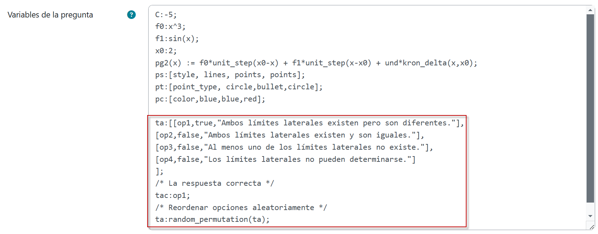
Se trata de una pregunta de opción múltiple con texto, en donde la primera opción es la respuesta correcta, en tanto que las tres restantes son distractores. Las cuatro opciones están descritas como sublistas, mismas que en su conjunto constituyen la lista principal de respuestas que se visualizará en Moodle, la cual en este caso ha sido asignada a la variable ta. Observemos que la lista principal entonces no puede considerarse como la respuesta del profesor frente a la cual se cotejará la respuesta seleccionada por el alumno para determinar si éste último ha acertado o no. Es por esta razón que se ha asignado la clave de la respuesta correcta, op1, a la variable tac, con miras a facilitar más adelante esta tarea.
Por otra parte, ta:random_permutation(ta); nos permite presentar a cada alumno las opciones en orden aleatorio.
Ahora bien, en el Enunciado de la pregunta capturaremos lo siguiente:
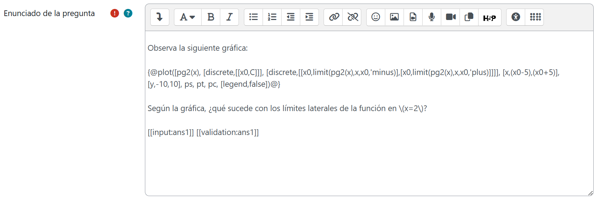
En toda pregunta en la que se presenten opciones de respuesta en forma aleatoria, es útil capturar el siguiente CASText en el campo Notas de la pregunta, pues nos facilitará en su momento reconocer cuál fue la versión que se le presentó al estudiante y cuál opción corresponde a la respuesta correcta:
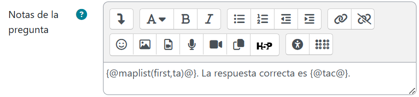
En Entrada, seleccionaremos como tipo la opción Radio y en respuesta modelo capturaremos ta. En este tipo de preguntas, toda vez que no se hace necesaria una validación sintáctica, elegiremos No tanto en Verificar respuesta como Mostrar validación. Adicionalmente, en Extraoptions, se ha capturado nonotanswered para prevenir que el estudiante pueda dejar desmarcada alguna opción al enviar su respuesta.
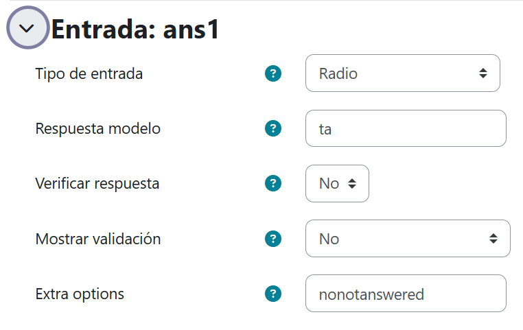
Una vez que el estudiante envía su respuesta, ans1, ésta ingresa al árbol potencial de respuestas para su validación semántica. En este caso, se requiere comparar ans1 con tac y determinar si son equivalentes no matemáticamente sino para un CAS (en este caso, Maxima) :
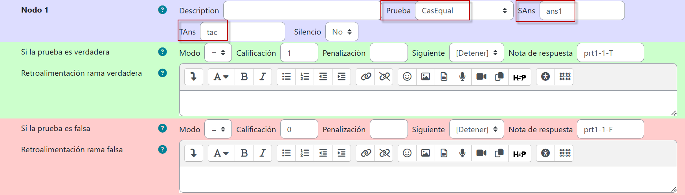
Guardamos los cambios y en la previsualización obtendremos el siguiente resultado:
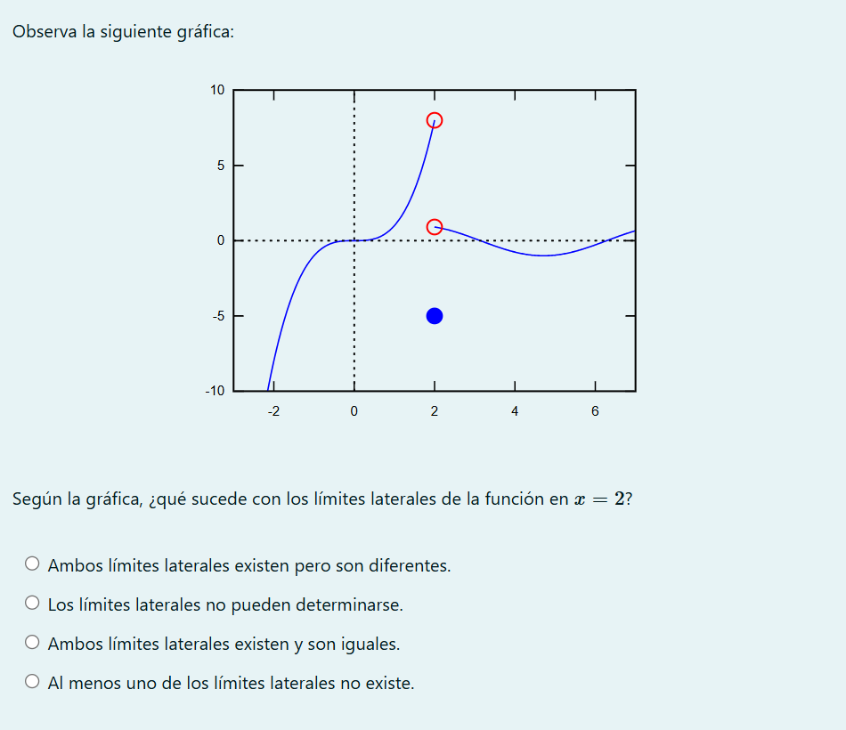
Observemos que las opciones de respuesta aparecen en un orden distinto al capturado, como se esperaba. De hecho, en las Notas de la pregunta, es clara la versión (el orden presentado) y la respuesta correcta.
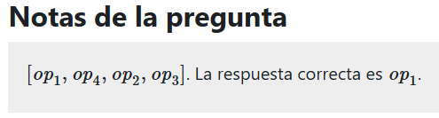
Opciones múltiples con LaTeX
Ahora, generemos una nueva pregunta de STACK en la que capturaremos lo siguiente en Variables de la pregunta:
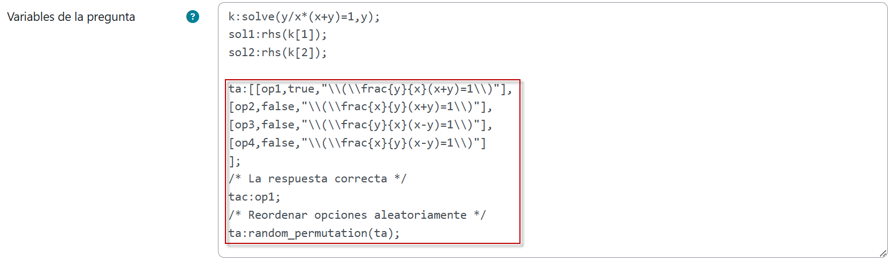
Como puede observarse, aunque las etiquetas aparecen entre comillas como en el ejemplo de opción múltiple con texto, entre éstas aparece código LaTeX en el que los comandos se indican no con una diagonal invertida - como usualmente - sino con dos. Esto nos permitirá especificar opciones de respuesta con expresiones y notación matemática.
Ahora, es necesario capturar el siguiente texto en Enunciado de la pregunta:
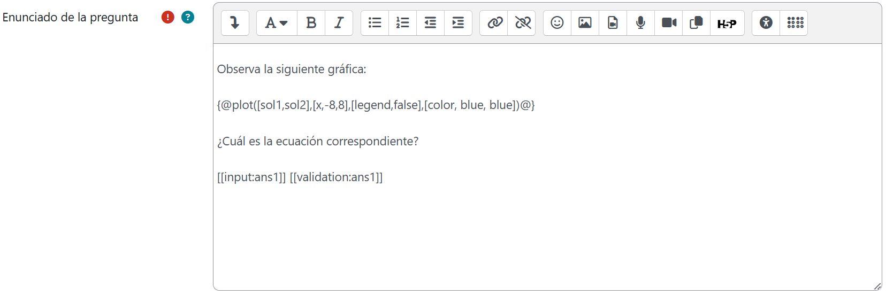
En Notas de la pregunta, Entrada, Árbol de respuestas potenciales y Nodos, nos aseguraremos de seleccionar y capturar las mismas especificaciones que en la pregunta de opción múltiple con texto que recién creamos en el ejemplo previo.
Al guardar los cambios y previsualizar, el resultado será el siguiente:
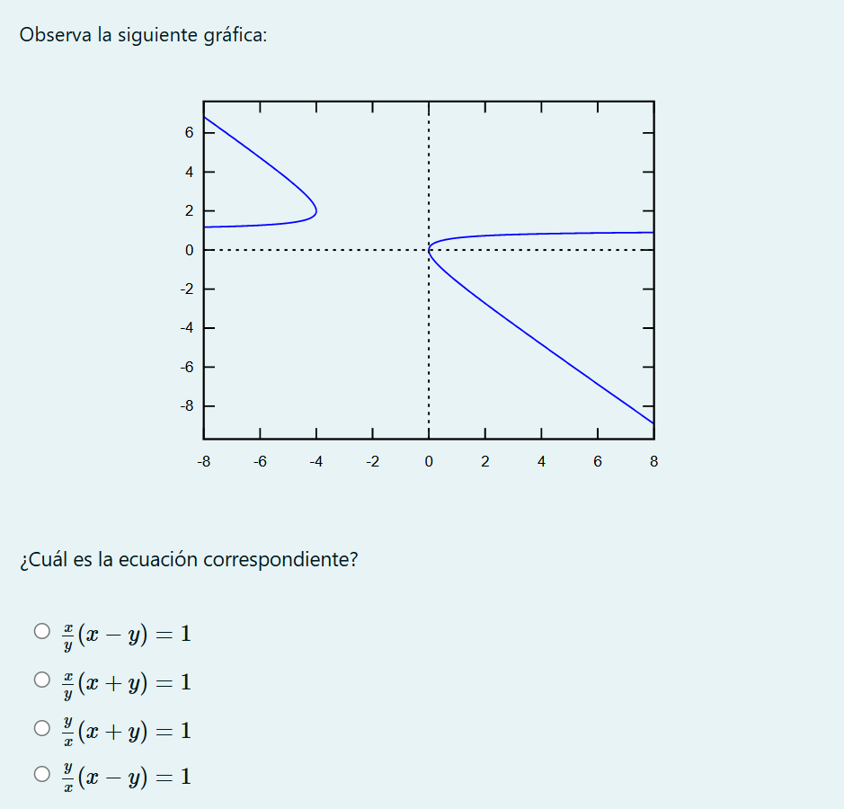
Opciones mútiples con gráficas
En las preguntas de opción múltiple, en ocasiones podría resultar conveniente apoyarse en imágenes, no propiamente en el cuerpo del enunciado como hemos hecho hasta ahora, sino en las propias opciones. Para ilustrar un ejemplo de ello, crearemos una nueva pregunta STACK y en Variables de la pregunta haremos la siguiente captura:
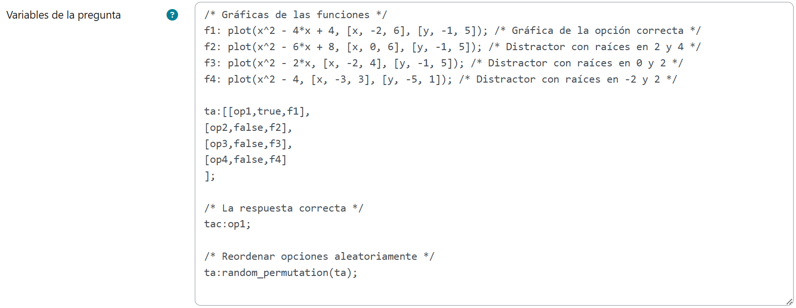
La lógica es exactamente la misma que hemos empleado con anterioridad, solo que para la respuesta modelo hemos creado primero las variables f1, f2, f3 y f4, a las que hemos asignado cuatro maxigráficas (la respuesta correcta y los distractores). En Enunciado de la pregunta colocaremos el siguiente texto:
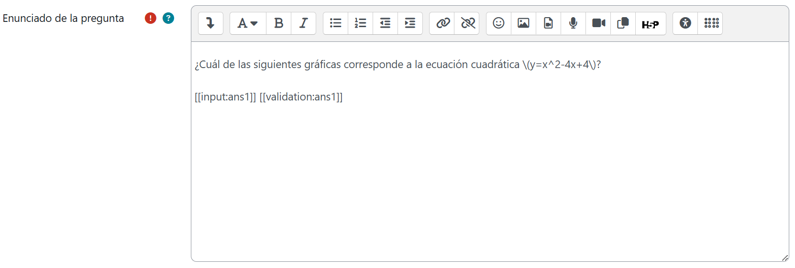
Nos aseguraremos de seleccionar y capturar las mismas especificaciones que en la pregunta de opción múltiple con texto del primer ejemplo, tanto en Notas de la pregunta, Entrada, Árbol de respuestas potenciales y Nodos.
Luego de guardar los cambios obtendremos la siguiente previsualización:
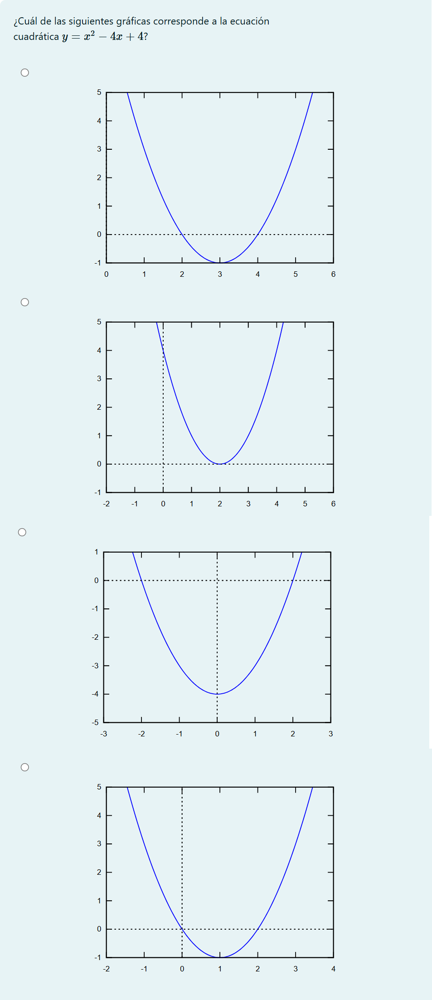
¡Hemos conseguido que todas las opciones de este pregunta sean imágenes homogéneas y de calidad con gran facilidad gracias a STACK!